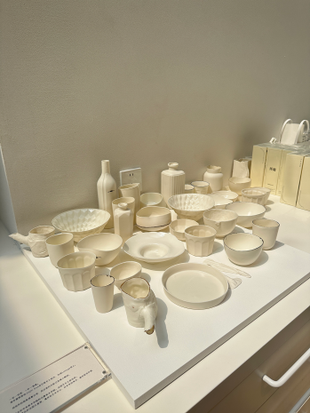
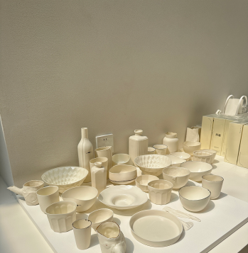
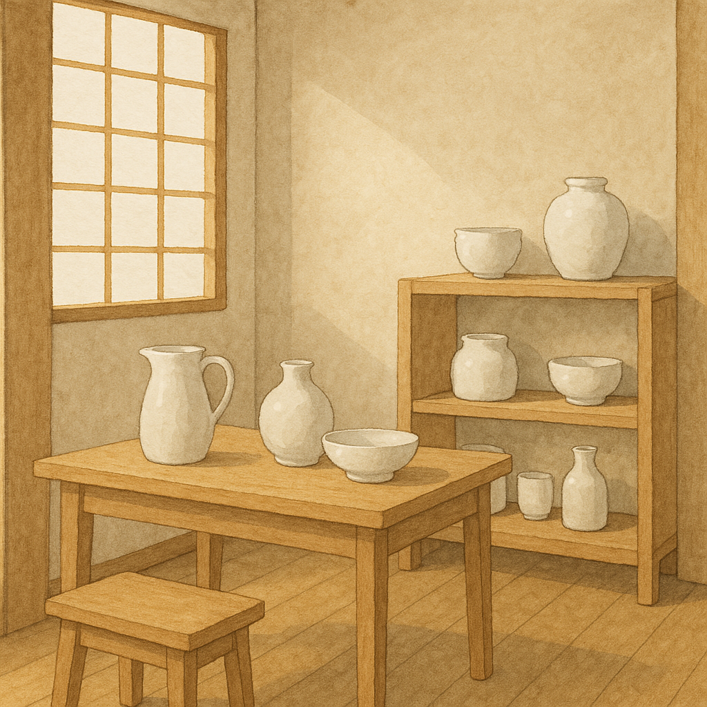

整个店装修和物品都是白色的，很有日式风格
2025.6，阿那亚买手店
G1 白色陶瓷物品展示 → left [S_overlap_F1]
G2 日式风格的感受 → right [S_text_F2]
画布: 1330 × 831 px
规划耗时: 0.68 ms
OmDet: 28 个检测 (book, bottle, bowl, candle, cup, desk, dining table, mug, plate, spoon, table, teapot, vase, wall)
S_text_F2 AI生成图片 (耗时 42566.1ms)
S_overlap_F1 crop: [0,0]-[349,352] 来源=omdet 匹配=cup(0.80), mug(0.41), bowl(0.51), plate(0.65), vase(0.33), teapot(0.53), spoon(0.31), wall(0.46) 最高分=0.80